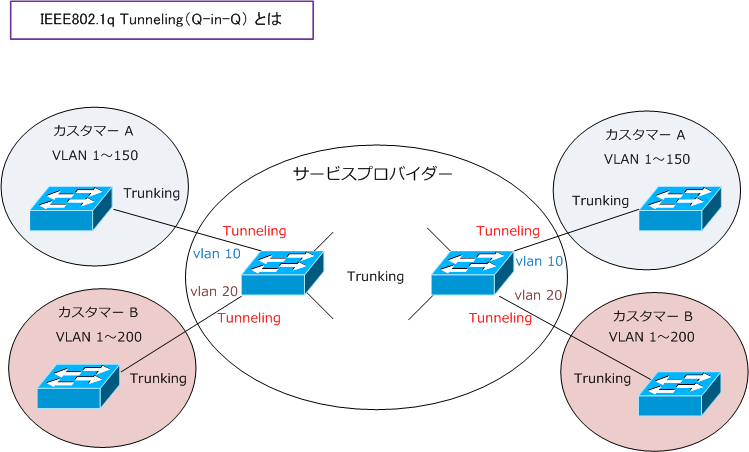
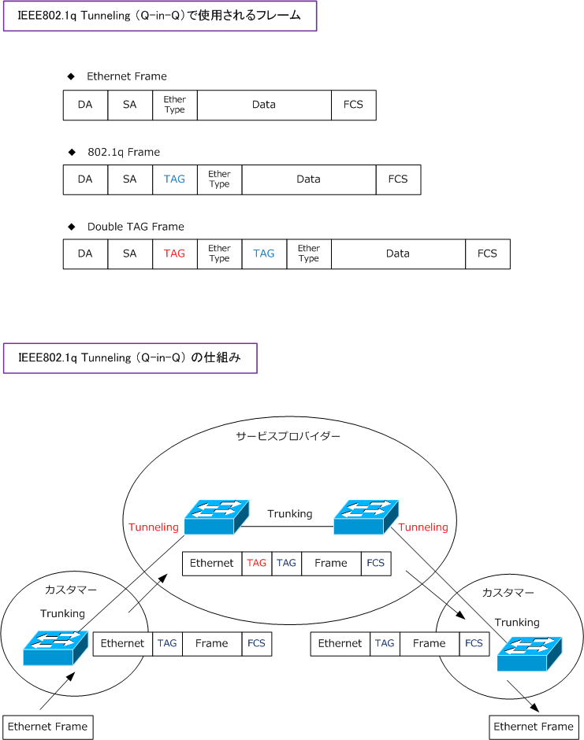

802.1q Tunneling ( Q-in-Q )
IEEE802.1q トンネリングとは
802.1qトンネリングは、サービスプロバイダー用に設計された機能です。802.1qトンネリングによって、 ある顧客のVLANトラフィックを他の顧客のVLANトラフィックに影響を与えずにサービスプロバイダーの ネットワークを経由し伝送できます。カスタマーのトラフィックをサービスプロバイダのVLANに割り当て 分離することで実現しています。つまりカスタマーからの入力トラフィックに追加のタグを付加しています。
IEEE802.1q トンネリングによるWAN
サービスプロバイダーが、複数のカスタマーにWAN ( Ethernet ) を提供する場合、カスタマーで使用する VLAN IDに重複が発生する可能性だけでなく、802.1Q 仕様のVLAN制限（ 4096個 ）を超えてしまいます。 IEEE802.1qトンネリングにより、カスタマーから送信されるタグ付きトラフィックにキャリア側スイッチで 再びタグを付加することで、カスタマーのVLANトラフィックを単一のVLANトラフィックにして送信できる のでVLAN ID重複やVLAN制限の問題を解決します。追加タグによりサービスプロバイダー内で区別されます。

802.1q トンネリングをサポートするように設定したスイッチポートは「トンネルポート」と呼ばれます。 トンネリングする場合、トンネリング専用のVLAN IDにトンネルポートを割り当てます。このVLAN IDは サービスプロバイダー内で一意である必要があります。このVLAN IDによってカスタマーの複数のVLANを 伝送します。上図でカスタマー側スイッチはトランクポートで、キャリア側はトンネルポートになります。
IEEE802.1q トンネリングによるタギング
下図でカスタマーのトランクポートから、サービスプロバイダーのトンネルポートに発信されるパケットは 802.1q タグ（カスタマーVLAN IDが含まれる）が付いています。
次に、サービスエッジのトンネルポートで受信してサービスプロバイダーのトランクポートから発信される パケットは別の 802.1q タグ（ サービスプロバイダで定義したカスタマー固有のVLAN IDが含まれる ）が 付加されます。サービスプロバイダー内で転送される場合、２度目に付加されるタグを付けたり外すことで スイッチングを行うので元の 802.1q タグは保護されます。そして、サービスエッジのトンネルポートから カスタマー側のスイッチに送信される時はキャリア側のタグは全て外されています。
